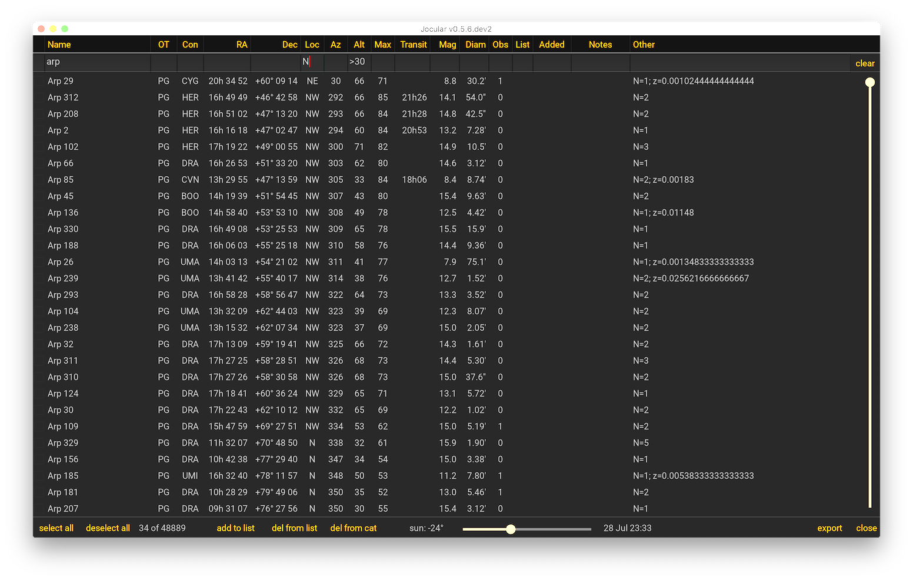
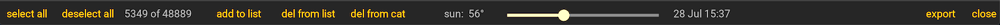

The DSO planner
Jocular provides a large DSO catalogue that forms the basis for actions such as
browsing DSO properties
session planning
constructing and using observation lists
You can also include your own DSO catalogues.
The DSO planner is accessed using the search icon , bringing up a screen like the following:

The planner consists of
a header bar consisting of clickable column labels representing DSO properties
a filter bar allowing a user to restrict (i.e. filter) the table rows
a table of DSOs matching the users’ filters
a control bar at the base of the screen
DSO Properties
DSO properties are organised into columns:
Name,Con,RA,Dec,Mag,Diamhave obvious meaningsOTis a 2 or 3 letter code indicating the object type e.g. PN, GXAlt,Azindicate the altitude and azimuth that the DSO has from the latitude/longitude you set upLocis a 1 or 2 letter code identifying one of 8 quadrants in which the DSO can be found at a given time; while the same information can be gleaned fromAz, it is often easier to work with simple compass directionsMaxandTransitindicate the maximum altitude that a DSO reaches, and the time at which it reaches that altitude (blank indicates circumpolar objects)Otherprovides a brief summary of any information that Jocular has about this DSO. The fields here are object-type-specific with (hopefully) obvious interpretations!The
Obs,List,AddedandNotescolumns help with creating observing lists.Obsis the number of previous observations you’ve made of this DSO that Jocular knows about.Listis set to the valueYif the DSO is on the observing list andNotherwise. In the former caseAddedlists the day and month when it was added to the list. Finally,Notesis a text-entry box where you can add a (very) brief note-to-self e.g. “OOTM” (object of the month); “must observe!”; “check colour”
Clicking on any of the column names performs an appropriate sort of that column. Clicking again reverse the order of the sort.
In addition to the column names, the leftmost column contains a checkbox that can be used for selecting/deselecting rows (although much of the time this is done using the select all/deselect all options in the control bar).
Filtering DSOs
While you can use the scroll bar to find interesting objects, it is much more effective to access the DSOs you want using column filters. By typing into the boxes below each column name, the displayed values are restricted to those that match the filter. Multiple filters can be used, in which all filters must be satisfied.
For example, in the image above, the table is restricted to showing members of the Arp catalogue whose location code contains N (north) and whose altitude at a given time is greater than 30 degrees.
For non-numeric columns such as
Name,OT,Conetc, the value in the filter acts as a prefix i.e. any DSOs starting with the supplied filter are matched.If you want to match a suffix, use an asterisk wildcard character * e.g. *100 matches any DSO whose name ends in ‘100’.
To match within a name, use two asterisks e.g. *ring galax* in the
Othercolumn matches notes that contain the phrase ‘ring galaxy’ or ‘ring galaxies’.To specify an exact match (rather than matching all prefixes) place an
=symbol at the start of the term e.g.=ngc 5matches onlyngc 5and not alsongc 51,ngc 514etc
For numeric columns, DSOs are selected that match the value provided, but although a single value could be used, it is more common to use a value along with an operator such as ‘>’ or ‘<’, to select values that are greater or less than that value (in fact, the operator also includes equality).
to specify a range, separate two values with a comma viz. 10, 12 in the
RAcolumn restricts to DSOs with right ascensions between 10h and 12h (inclusive)to specify a disjunctive range, use operators along with the comma notation e.g. >22, <2 in the
Transitcolumn indicates objects that transit between of the hours of 22.00 and 02.00
DSO table
Clicking on a DSO name provides a way to add an object name to the current observation. Note that the DSO planner will close at this point and the DSO details will be filled in on the DSO info panel at the top left of the main screen (assuming that panel is displayed). This can also be used to provide/change a name for a previous observation.
Changing the name of an object
If you already have a DSO name for a live or previous observation and then select a DSO name in the DSO table, Jocular will ask you to confirm the name change.
Control bar
At the base of the DSO table is a bar with a range of controls:

These controls are used to effect certain operations. From left to right:
select all/deselect all: select/deselect all DSO that meet the current selection criteria; checkboxes will appear/be removed from the DSOs selected/deselectedadd to list/del from list: add/remove the selected rows to/from the observing list; the change is reflected in theListandAddedcolumns, and the checkboxes are cleared.del from catprovides a way to remove objects that you’ve added (this will be covered later)the slider is used to control the time that an observation is being made, for up to 24 hours into the future from the current time, and the solar altitude is modified; this control is useful to explore DSO positions during an upcoming observing session
exportsaves a comma-separated-value file of objects that meet the current selection criteria; the file is saved to theexportssub-directory of yourjoculardatadirectoryclosecloses the DSO planner; note that your selection filters are saved so that when you next open the DSO planner you will see the same view. This behaviour is useful when going through an observing list (see below)
Constructing and using observing lists
An observing list can be created by applying the following operations, perhaps repeatedly:
filter the table to include the DSO(s) you’re interested in
either
select all, or click just the rows you wantclick
add to list
To use the list during the session, type ‘Y’ into the List column, which will select everything on your list. Then, when you are ready to observe/select a new object, open the DSO browser and your list will be displayed.
Note
One tip that will be useful in some situations is to set the Obs column filter to zero when using observing lists. This ensures that as you progress through your list during the course of a session, those objects you’ve already observed in the session are removed.
Although there is only a single column denoting whether a DSO is in an observing list, you can make use of column filtering to create what are in effect multiple observing lists. For example, you might have several ongoing observation programmes (say the Berkeleys and the Arps), but know that on a given night you’re going to focus on just the Berkeleys. In that case, simply type ‘Berkeley’ into the Name column and ‘Y’ in List to restrict the list.
In fact, once you get used to using column filters to define what you want to see on a given night, there may be no need to use explicit observing lists at all! The entire DSO catalogue is a giant observing list, and column filters just select the part you’re interested in on a given occasion.
This won’t work when you want to observe an eclectic collection of objects that cannot be specified using a single set of column filters, as is typically the case when more than one object type is involved. Here, explicitly assigning objects to an observing list can be useful.